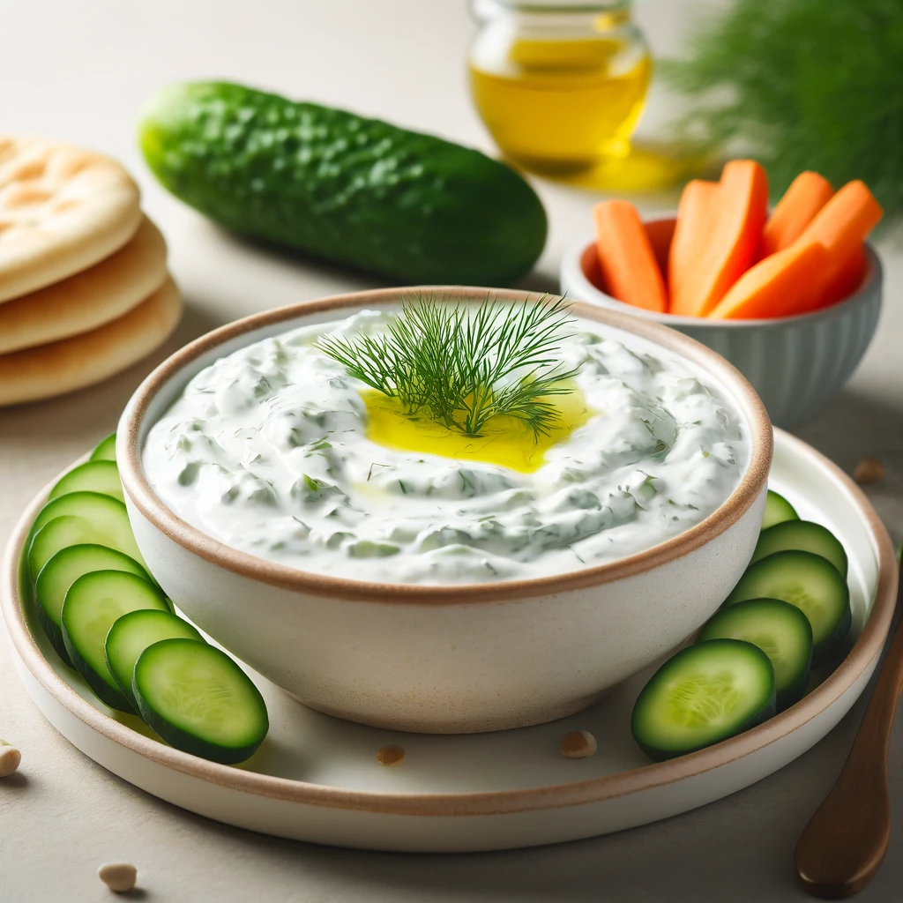
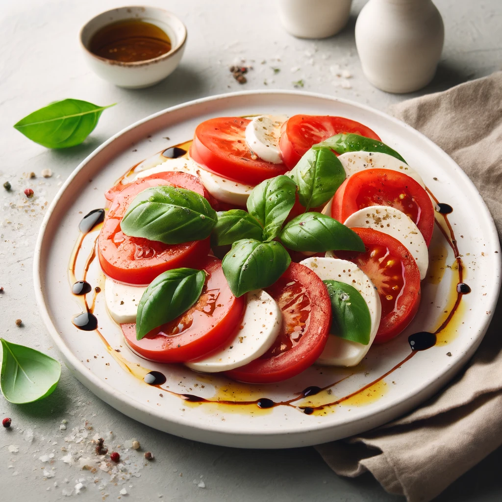

Recipes
Greek Salad
Cook Time: 15 minutes
Ingredients:
- 4 ripe tomatoes, chopped
- 1 cucumber, sliced
- 1 red onion, thinly sliced
- 1 green bell pepper, sliced
- 1 cup black olives
- 1 cup feta cheese, crumbled
- 2 tablespoons olive oil
- 1 teaspoon dried oregano
- Salt and pepper to taste
Instructions:
- In a large bowl, combine the tomatoes, cucumber, red onion, green bell pepper, and black olives.
- Drizzle the olive oil over the vegetables and sprinkle with dried oregano, salt, and pepper.
- Toss gently to combine.
- Add the crumbled feta cheese on top.
- Serve immediately or chill in the refrigerator for 15 minutes before serving.
Hummus
Cook Time: 10 minutes
Ingredients:
- 1 can (15 oz) chickpeas, drained and rinsed
- 1/4 cup fresh lemon juice (1 large lemon)
- 1/4 cup well-stirred tahini
- 1 small garlic clove, minced
- 2 tablespoons olive oil, plus more for serving
- 1/2 teaspoon ground cumin
- Salt to taste
- 2 to 3 tablespoons water
- Dash of ground paprika, for serving
Instructions:
- In a food processor, combine the tahini and lemon juice and process for 1 minute, scrape the sides and bottom, then process for 30 seconds more.
- Add the olive oil, minced garlic, cumin, and a pinch of salt to the whipped tahini and lemon juice. Process for 30 seconds, scrape the sides and bottom, then process for another 30 seconds or until well blended.
- Add half of the chickpeas to the food processor and process for 1 minute. Scrape the sides and bottom, then add the remaining chickpeas and process until thick and smooth, 1 to 2 minutes.
- With the food processor running, slowly add 2 to 3 tablespoons of water until the hummus is smooth and creamy.
- Transfer the hummus to a serving bowl, drizzle with olive oil, and sprinkle with paprika.
- Serve with pita bread, fresh vegetables, or as a spread.
Tzatziki
Cook Time: 15 minutes
Ingredients:
- 1 cup plain Greek yogurt
- 1 cucumber, grated
- 2 cloves garlic, minced
- 1 tablespoon olive oil
- 1 tablespoon fresh lemon juice
- 1 tablespoon fresh dill, chopped
- Salt and pepper to taste
Instructions:
- Grate the cucumber and squeeze out excess moisture using a cheesecloth or paper towel.
- In a medium bowl, combine the grated cucumber, Greek yogurt, minced garlic, olive oil, lemon juice, and fresh dill.
- Season with salt and pepper to taste.
- Mix until well combined.
- Cover and refrigerate for at least 30 minutes to allow the flavors to meld.
- Serve chilled with pita bread, fresh vegetables, or as a sauce for grilled meats.
Falafel
Cook Time: 1 hour (including chilling time)
Ingredients:
- 1 cup dried chickpeas (or 1 can, drained)
- 1 small onion, chopped
- 2 cloves garlic, minced
- 1/4 cup fresh parsley, chopped
- 1/4 cup fresh cilantro, chopped
- 1 teaspoon ground cumin
- 1 teaspoon ground coriander
- 1/2 teaspoon baking powder
- Salt and pepper to taste
- Oil for frying
Instructions:
- If using dried chickpeas, soak them in water overnight. Drain and rinse before using.
- In a food processor, combine the chickpeas, onion, garlic, parsley, cilantro, cumin, coriander, baking powder, salt, and pepper. Process until the mixture is finely ground but not pureed.
- Transfer the mixture to a bowl, cover, and refrigerate for at least 30 minutes.
- Form the mixture into small balls or patties.
- Heat oil in a deep fryer or heavy skillet to 350°F (175°C). Fry the falafel in batches until golden brown and crisp, about 3-4 minutes per side.
- Drain on paper towels and serve hot with pita bread, hummus, or a salad.
Tabbouleh
Cook Time: 30 minutes
Ingredients:
- 1/2 cup bulgur wheat
- 1 cup boiling water
- 2 cups fresh parsley, finely chopped
- 1/2 cup fresh mint, finely chopped
- 4 ripe tomatoes, diced
- 1 cucumber, diced
- 4 green onions, finely chopped
- 1/4 cup fresh lemon juice
- 1/4 cup olive oil
- Salt and pepper to taste
Instructions:
- Place the bulgur wheat in a bowl and pour the boiling water over it. Cover and let sit for 15 minutes, or until the water is absorbed and the bulgur is tender. Fluff with a fork.
- In a large bowl, combine the soaked bulgur, parsley, mint, tomatoes, cucumber, and green onions.
- In a small bowl, whisk together the lemon juice, olive oil, salt, and pepper.
- Pour the dressing over the salad and toss to combine.
- Refrigerate for at least 15 minutes before serving to allow the flavors to meld.
- Serve chilled or at room temperature.
Baba Ganoush
Cook Time: 40 minutes
Ingredients:
- 2 large eggplants
- 1/4 cup tahini
- 3 tablespoons lemon juice
- 2 cloves garlic, minced
- 2 tablespoons olive oil, plus more for drizzling
- Salt and pepper to taste
- 1/4 teaspoon smoked paprika (optional)
- Fresh parsley, chopped (for garnish)
Instructions:
- Preheat the oven to 400°F (200°C). Prick the eggplants all over with a fork and place them on a baking sheet. Roast for 30-40 minutes, or until the skin is charred and the flesh is soft. Allow to cool.
- Cut the eggplants open and scoop out the flesh, discarding the skin. Place the eggplant flesh in a food processor.
- Add the tahini, lemon juice, garlic, olive oil, salt, and pepper to the food processor. Process until smooth and creamy.
- Transfer the baba ganoush to a serving bowl. Drizzle with olive oil and sprinkle with smoked paprika and chopped parsley.
- Serve with pita bread, fresh vegetables, or as a dip.
Stuffed Grape Leaves (Dolmas)
Cook Time: 1 hour
Ingredients:
- 1 jar grape leaves, drained and rinsed
- 1 cup rice, rinsed
- 1 onion, finely chopped
- 1/4 cup fresh parsley, chopped
- 1/4 cup fresh mint, chopped
- 1/4 cup pine nuts
- 1/4 cup currants (optional)
- 1/4 cup olive oil
- 1/4 cup lemon juice
- Salt and pepper to taste
- 2 cups vegetable broth
Instructions:
- In a large bowl, mix the rice, onion, parsley, mint, pine nuts, currants, olive oil, lemon juice, salt, and pepper.
- Lay a grape leaf flat, vein side up. Place a teaspoon of the rice mixture at the base of the leaf. Fold the sides over the filling and roll up tightly.
- Place the stuffed grape leaves seam side down in a large pot. Repeat with remaining grape leaves and filling.
- Pour the vegetable broth over the stuffed grape leaves and cover with a heatproof plate to keep them in place.
- Bring to a boil, then reduce heat and simmer for 40 minutes or until the rice is cooked.
- Remove from heat and let cool slightly before serving. Serve warm or at room temperature.
Spanakopita
Cook Time: 1 hour
Ingredients:
- 1 pound fresh spinach, washed and chopped
- 1 cup feta cheese, crumbled
- 1/2 cup ricotta cheese
- 1/4 cup fresh dill, chopped
- 1/4 cup fresh parsley, chopped
- 3 green onions, chopped
- 2 eggs, beaten
- 1 package phyllo dough, thawed
- 1/2 cup butter, melted
- Salt and pepper to taste
Instructions:
- Preheat the oven to 350°F (175°C).
- In a large bowl, combine the spinach, feta cheese, ricotta cheese, dill, parsley, green onions, eggs, salt, and pepper.
- Brush a 9x13-inch baking dish with melted butter. Layer 5 sheets of phyllo dough in the dish, brushing each sheet with melted butter.
- Spread half of the spinach mixture over the phyllo dough. Layer 5 more sheets of phyllo on top, brushing each with butter.
- Spread the remaining spinach mixture over the phyllo. Top with the remaining phyllo sheets, brushing each with butter.
- Bake for 45 minutes to 1 hour, or until the phyllo is golden brown and crisp.
- Let cool for 10 minutes before slicing and serving.
Baklava
Cook Time: 1 hour 30 minutes
Ingredients:
- 1 package phyllo dough, thawed
- 2 cups walnuts, finely chopped
- 1 cup pistachios, finely chopped
- 1 cup unsalted butter, melted
- 1 teaspoon ground cinnamon
- 1 cup sugar
- 1 cup water
- 1/2 cup honey
- 1 teaspoon vanilla extract
- 1 teaspoon lemon juice
Instructions:
- Preheat the oven to 350°F (175°C).
- In a bowl, combine the chopped walnuts, pistachios, and ground cinnamon.
- Brush a 9x13-inch baking dish with melted butter. Layer 10 sheets of phyllo dough in the dish, brushing each sheet with melted butter.
- Sprinkle a thin layer of the nut mixture over the phyllo.
- Repeat layers, brushing each sheet with butter and sprinkling with nuts, until all the nuts are used. Top with remaining phyllo sheets, brushing each with butter.
- Using a sharp knife, cut the baklava into diamond or square shapes.Bake for 45-50 minutes, or until the phyllo is golden brown and crisp.
- While the baklava is baking, prepare the syrup. In a saucepan, combine the sugar, water, honey, vanilla extract, and lemon juice. Bring to a boil, then reduce heat and simmer for 10 minutes.
- Remove the baklava from the oven and immediately pour the hot syrup over it. Let cool completely before serving.
Shakshuka
Cook Time: 30 minutes
Ingredients:
- 2 tablespoons olive oil
- 1 onion, chopped
- 1 red bell pepper, chopped
- 3 cloves garlic, minced
- 1 teaspoon ground cumin
- 1 teaspoon ground paprika
- 1/4 teaspoon cayenne pepper (optional)
- 1 can (28 oz) crushed tomatoes
- Salt and pepper to taste
- 6 large eggs
- 1/4 cup fresh parsley, chopped
- 1/4 cup crumbled feta cheese (optional)
Instructions:
- Heat olive oil in a large skillet over medium heat. Add the onion and red bell pepper, and cook until softened, about 5 minutes.
- Add the garlic, cumin, paprika, and cayenne pepper, and cook for another 1-2 minutes, until fragrant.
- Pour in the crushed tomatoes, and season with salt and pepper. Simmer for 10-15 minutes, until the sauce has thickened.
- Make small wells in the sauce and crack the eggs into each well. Cover the skillet and cook until the eggs are set, about 5-7 minutes.
- Sprinkle with fresh parsley and crumbled feta cheese before serving.
- Serve with crusty bread or pita for dipping.
Caprese Salad
Cook Time: 10 minutes
Ingredients:
- 4 ripe tomatoes, sliced
- 1 pound fresh mozzarella cheese, sliced
- 1 bunch fresh basil leaves
- 2 tablespoons extra-virgin olive oil
- 1 tablespoon balsamic vinegar (optional)
- Salt and pepper to taste
Instructions:
- Arrange the tomato and mozzarella slices on a serving platter, alternating between them.
- Tuck fresh basil leaves between the tomato and mozzarella slices.
- Drizzle with extra-virgin olive oil and balsamic vinegar, if using.
- Season with salt and pepper to taste.
- Serve immediately.
Ratatouille
Cook Time: 1 hour 30 minutes
Ingredients:
- 1/4 cup olive oil
- 1 onion, chopped
- 2 cloves garlic, minced
- 1 eggplant, diced
- 2 zucchinis, diced
- 1 red bell pepper, chopped
- 1 yellow bell pepper, chopped
- 4 ripe tomatoes, chopped
- 1/4 cup fresh basil, chopped
- 1 teaspoon dried thyme
- Salt and pepper to taste
Instructions:
- Heat the olive oil in a large pot over medium heat. Add the onion and garlic, and cook until softened, about 5 minutes.
- Add the eggplant, zucchinis, red bell pepper, and yellow bell pepper. Cook for another 10 minutes, until the vegetables start to soften.
- Stir in the tomatoes, basil, thyme, salt, and pepper. Reduce heat to low, cover, and simmer for 45 minutes to 1 hour, stirring occasionally.
- Uncover and continue to simmer for an additional 15 minutes, or until the vegetables are tender and the flavors have melded.
- Serve hot, warm, or at room temperature.
Lentil Soup
Cook Time: 45 minutes
Ingredients:
- 2 tablespoons olive oil
- 1 onion, chopped
- 2 carrots, diced
- 2 celery stalks, diced
- 3 cloves garlic, minced
- 1 teaspoon ground cumin
- 1 teaspoon ground coriander
- 1/2 teaspoon ground turmeric
- 1/4 teaspoon ground cinnamon
- 1/4 teaspoon ground cayenne pepper
- 1 cup dried brown or green lentils, rinsed
- 1 can (14.5 oz) diced tomatoes
- 6 cups vegetable broth
- 1 bay leaf
- Salt and pepper to taste
- 2 tablespoons fresh lemon juice
- 1/4 cup fresh cilantro, chopped (optional)
Instructions:
- Heat the olive oil in a large pot over medium heat. Add the onion, carrots, and celery, and cook until softened, about 5 minutes.
- Add the garlic, cumin, coriander, turmeric, cinnamon, and cayenne pepper, and cook for another 1-2 minutes, until fragrant.
- Stir in the lentils, diced tomatoes, vegetable broth, and bay leaf. Bring to a boil, then reduce heat and simmer for 30 minutes, or until the lentils are tender.
- Season with salt and pepper to taste. Remove the bay leaf.
- Stir in the lemon juice and cilantro, if using.
- Serve hot with crusty bread.
Grilled Chicken Souvlaki
Cook Time: 1 hour (including marinating time)
Ingredients:
- 2 pounds chicken breast, cut into 1-inch pieces
- 1/4 cup olive oil
- 2 tablespoons fresh lemon juice
- 3 cloves garlic, minced
- 1 tablespoon dried oregano
- Salt and pepper to taste
- Wooden or metal skewers
Instructions:
- In a large bowl, combine the olive oil, lemon juice, garlic, oregano, salt, and pepper. Add the chicken pieces and toss to coat. Cover and refrigerate for at least 30 minutes.
- Preheat the grill to medium-high heat.
- Thread the marinated chicken pieces onto skewers.
- Grill the chicken skewers for 10-15 minutes, turning occasionally, until the chicken is cooked through and has a nice char.
- Remove from the grill and let rest for a few minutes before serving.
- Serve with pita bread, tzatziki sauce, and a Greek salad.
Fattoush Salad
Cook Time: 20 minutes
Ingredients:
- 2 pita breads, toasted and cut into small pieces
- 1 head romaine lettuce, chopped
- 1 cucumber, diced
- 2 tomatoes, diced
- 4 radishes, thinly sliced
- 1 small red onion, thinly sliced
- 1/4 cup fresh parsley, chopped
- 1/4 cup fresh mint, chopped
- 1/4 cup olive oil
- 3 tablespoons fresh lemon juice
- 1 tablespoon sumac
- Salt and pepper to taste
Instructions:
- In a large bowl, combine the romaine lettuce, cucumber, tomatoes, radishes, red onion, parsley, and mint.
- In a small bowl, whisk together the olive oil, lemon juice, sumac, salt, and pepper.
- Pour the dressing over the salad and toss to combine.
- Add the toasted pita pieces and toss gently to combine.
- Serve immediately.
Panzanella
Cook Time: 20 minutes
Ingredients:
- 4 cups stale bread, cut into cubes
- 4 ripe tomatoes, chopped
- 1 cucumber, sliced
- 1 red onion, thinly sliced
- 1/2 cup fresh basil leaves, torn
- 1/4 cup extra-virgin olive oil
- 2 tablespoons red wine vinegar
- Salt and pepper to taste
Instructions:
- In a large bowl, combine the bread cubes, tomatoes, cucumber, red onion, and basil.
- In a small bowl, whisk together the olive oil, red wine vinegar, salt, and pepper.
- Pour the dressing over the bread mixture and toss to combine.
- Let the salad sit for at least 15 minutes to allow the flavors to meld and the bread to soak up the dressing.
- Serve at room temperature.
Grilled Lamb Chops

Cook Time: 20 minutes
Ingredients:
- 8 lamb chops
- 1/4 cup olive oil
- 3 cloves garlic, minced
- 2 tablespoons fresh rosemary, chopped
- 2 tablespoons fresh thyme, chopped
- Salt and pepper to taste
- 1 lemon, cut into wedges
Instructions:
- In a small bowl, combine the olive oil, garlic, rosemary, thyme, salt, and pepper.
- Rub the lamb chops with the olive oil mixture and let marinate at room temperature for 15 minutes.
- Preheat the grill to medium-high heat.
- Grill the lamb chops for 3-4 minutes per side for medium-rare, or longer if desired.
- Remove from the grill and let rest for 5 minutes before serving.
- Serve with lemon wedges.
Baked Fish
Cook Time: 30 minutes
Ingredients:
- 4 fish fillets (such as cod or tilapia)
- 2 tablespoons olive oil
- 1 lemon, sliced
- 3 cloves garlic, minced
- 1 teaspoon dried oregano
- Salt and pepper to taste
- 1/4 cup fresh parsley, chopped
Instructions:
- Preheat the oven to 375°F (190°C).
- Place the fish fillets in a baking dish. Drizzle with olive oil and sprinkle with garlic, oregano, salt, and pepper.
- Arrange lemon slices on top of the fish.
- Bake for 20-25 minutes, or until the fish is opaque and flakes easily with a fork.
- Garnish with fresh parsley before serving.
- Serve with a side of roasted vegetables or a salad.
Overnight Oats
Cook Time: 5 minutes (plus overnight chilling)
Ingredients:
- 1/2 cup rolled oats
- 1/2 cup milk (dairy or plant-based)
- 1/4 cup Greek yogurt
- 1 tablespoon chia seeds
- 1 tablespoon honey or maple syrup
- 1/2 teaspoon vanilla extract
- Fresh berries, for topping
- Sliced almonds, for topping
- Additional honey or maple syrup, for drizzling
Instructions:
- In a jar or bowl, combine the rolled oats, milk, Greek yogurt, chia seeds, honey or maple syrup, and vanilla extract.
- Stir well to combine, ensuring that the oats are fully immersed in the liquid.
- Cover and refrigerate overnight, or for at least 4 hours.
- In the morning, give the oats a good stir. Add a splash of milk if the mixture is too thick.
- Top with fresh berries, sliced almonds, and a drizzle of honey or maple syrup.
- Enjoy your delicious and nutritious overnight oats!
Meal Planning
Monday
Breakfast: Greek Yogurt with Honey and Walnuts
Lunch: Greek Salad with Whole Wheat Pita
Dinner: Grilled Chicken Souvlaki with Tzatziki
Tuesday
Breakfast: Overnight Oats with Berries
Lunch: Hummus and Vegetable Wrap
Dinner: Baked Fish with Roasted Vegetables
Wednesday
Breakfast: Avocado Toast with Poached Egg
Lunch: Falafel with Tabbouleh
Dinner: Ratatouille with Quinoa
Thursday
Breakfast: Smoothie with Spinach, Banana, and Almond Milk
Lunch: Lentil Soup with a Side Salad
Dinner: Grilled Lamb Chops with Fattoush Salad
Friday
Breakfast: Caprese Salad
Lunch: Baba Ganoush with Whole Wheat Pita
Dinner: Shakshuka with Crusty Bread
Saturday
Breakfast: Greek Yogurt with Fresh Fruit
Lunch: Tzatziki and Vegetable Wrap
Dinner: Spanakopita with Greek Salad
Sunday
Breakfast: Smoothie Bowl with Granola
Lunch: Panzanella Salad
Dinner: Stuffed Grape Leaves with a Side of Roasted Vegetables
About
Welcome to the Mediterranean Diet Picture Book! This culinary adventure was born from a conversation and a sprinkle of AI magic. The images you see were generated by AI, proving that even robots appreciate good food. This book is dedicated to my brother, Nick Nesta. My hope is that he can embrace this delicious and healthy diet for his well-being. Feel free to use these recipes on your own journey to a healthier lifestyle, but remember, Nick, this one's especially for you. Bon appétit!